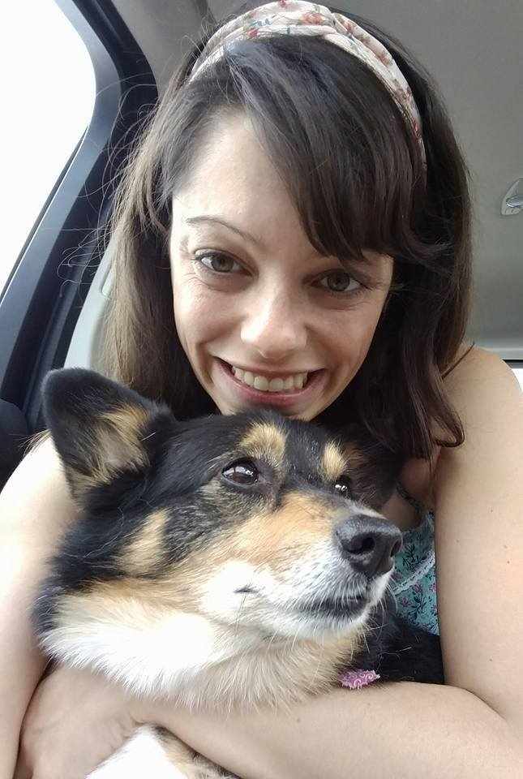

Melissa E Hare
Prime Academy Student. Problem Solver. Corgi Mama.

 1301 Hwy 7 #101 Hopkins MN 55305
1301 Hwy 7 #101 Hopkins MN 55305
I am an adaptable professional who enjoys challenges and learning new skills. A good communicator, I understand the importance and value of working together on a team. My work-ethic is unparalleled and I also strive for being one who can think ‘outside the box’ when solving problems.
Work Experience
Guthrie Theater
Front of House
September 2014 - Present
- Scanning patron tickets in a friendly and orderly fashion
- Directing and escorting patrons to seats and around the theater
- Monitering the theater during performances
- Maintaining cleanliness of the theaters.
- Working closely with House Managers and Box Office to ensure a smooth performance
Rice Lake Elementary School
Technology/Media Paraprofessional
September 2012 - January 2017
- Troubleshooting technology in classrooms
- Assisting with the deployment of student iPads
- Checking in and shelving library materials
- Managing the media checkout desk
- Possessing and labeling new materials
Rice Lake Elementary School
Kidstop Paraprofessional
September 2014 - October 2016
- Assisting the program manager and instructor in supervising children
- Leading and participating in group activities
- Greeting the parents and the children
- Assisting instructor and program manager in preparing and implementing program activities, preparing snacks, and ordering supplies
Osseo Area Schools
Human Resources Assistant
June 2008 - August 2012
- Managing the Human Resources reception desk
- Handling all license records and assisting employees with license renewals
- Processing and tracking all background checks
- Documenting processes and procedures for training purposes
- Performing data entry of employee information